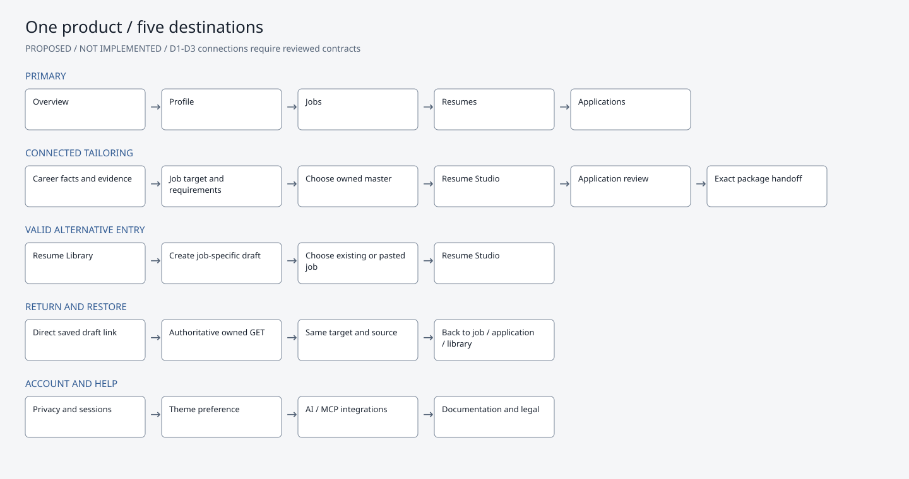
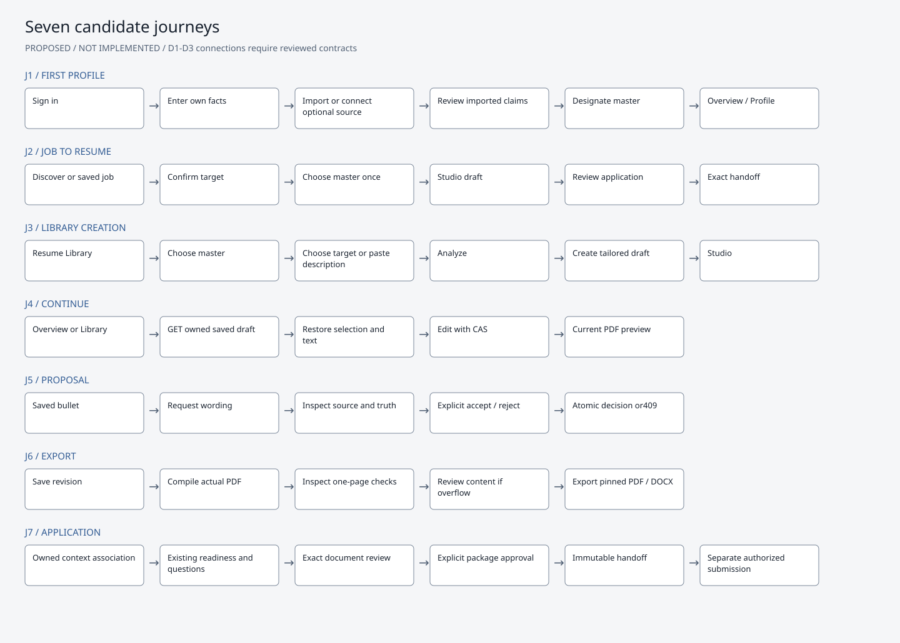

Career Hub + Resume Studio: unified product proposal
DESIGN-UNIFIED-001 / v1.0 / 2026-10-15 / PROPOSED — APPROVAL PENDING
Planning and design review only. No application implementation, schema changes, migration, Git
checkpoint, merge, copy between worktrees, deployment or production action is authorized by
this document. The separate review folder contains evidence and static wireframes only. No
worktree or project ledger is edited; a proposed ledger entry accompanies this plan because
the explicit read-only instruction takes precedence over the usual ledger-update protocol.
1. Recommended direction
Make Career Hub one candidate workspace with five primary destinations:
Overview, Profile, Jobs, Resumes, Applications. Resume Studio is the focused
editor inside Resumes, reachable directly from a job, a master resume, an application or a
saved draft. It does not get a second account system, candidate model, generation engine or
independent product navigation.
Use one restrained visual system with light and dark themes, existing Inter typography,
existing SVG icon vocabulary, consistent controls and semantic states. Keep the document white
in both themes. Replace repetitive dashboards and architecture banners with clear next actions
and inspectable details. Preserve functionality rather than hiding it to achieve a sparse
screen.
The first engineering priority after approval is context integration, not a new skin alone.
Draft listing, reusable job targeting and exact Studio-document binding into application
review/handoff are prerequisites for the proposed connected journey.
2. Evidence, scope and verified baseline
Inputs examined
Main AGENTS.md, goal.md, project.md; integrated ledger
and current PRD repair roadmap.
Original BLUEPRINT-2026-001 and UIUX-BLUEPRINT-2026-001; approved Antigravity desktop/mobile
prototype references and prototype source.
Competitive artifacts: verified_feature_catalog.md,
actual_resume_benchmark.md, reactive_resume_runtime_trace.md,
rezi_product_specification.md, and the research-closure ledger entry. These are
historical research inputs, not new live competitor evaluations. Feature-catalog
implementation statuses predate the integrated Studio and are not adopted as current fact.
Competitor prices and proprietary score claims are not requirements.
Current Studio contracts 1.0 analysis, 1.1 drafts, 1.2 proposals, 1.3
documents/history/diagnostics/approval, their executable schemas, fixtures, integration
handoff and local-visibility report.
Current app routes, layout, CSS, profile/readiness, Radar, library, Studio,
application-review/handoff source and existing persistence/approval adapters.
The goal's Phase0 footer is stale relative to the execution ledger's Phase14/16/17
work. This proposal follows the unchanged provider-neutral, evidence-based mission and the
explicitly authorized product refinement, without rewriting strategic documents or inventing
completion percentages.
Runtime and repository evidence
| Surface |
Verified state |
Interpretation |
| Main checkout |
C:\Users\VISHW\OneDrive\Desktop\Ai-career-agent, branch
main, HEAD890bcf03ed37bff11a912e68c1c7ee37c21f401a
|
Original application preserved; port3000 currently refuses connection |
| Integrated checkout |
C:\Users\VISHW\AppData\Local\Temp\career-resume-studio-backend, branch
backend/resume-studio-20261014, same HEAD
|
Running at127.0.0.1:4317; includes actual Studio frontend and APIs |
| Frontend checkout |
C:\Users\VISHW\AppData\Local\Temp\career-resume-studio-frontend, branch
frontend/resume-studio-20261014, same HEAD
|
Earlier UI work preserved; not the complete integrated application |
| Common repository |
All three registered worktrees, same baseline |
No merge assumed; valuable uncommitted changes remain |
| Source equivalence |
Twelve main page templates byte-identical between main and integrated checkout |
Career Hub's rendered pages on4317 are valid visual references for those original
templates; shared layout/navigation changes are explicitly different
|
| Browser audit |
Twelve authenticated top-level routes plus two source-detail captures return200 |
Desktop1440×1000 and mobile390×844 inspected; the two detail captures resolve the same
owned source document
|
| Additional states |
Seven Profile/Radar GET states return200, plus stored proposal/source/history and
account/mobile navigation captures
|
No business actions performed; some Profile aliases are retained by existing
navigation
|
| Business mutations |
No edits, generation, approval, application creation or submission requested |
Normal login creates a session. Two cached preview POSTs only reread an existing
immutable document; its ID and revision2 remain unchanged
|
| Existing acceptance |
Prior500-case integration and39-case navigation gates documented |
Historical evidence, not rerun or relabeled as design-review test results |
This review uses the disposable synthetic candidate. There are no connected repositories,
live-job results or application records. Source-document bytes are fixture placeholders while
canonical structured master data is seeded separately; the zero parsed-sections screen is not
evidence of a parser failure on real uploads. Live discovery, source import, populated
application review, handoff, external submission, live AI and Office DOCX pagination are
NOT VERIFIED in this audit. The earlier Office-rendering blocker remains.
Current screenshots are real Chrome renders in current-screens/;
browser-audit.json records status, controls, links, overflow and theme behavior.
Proposed SVG/PNG boards in wireframes/ are clearly marked
NOT IMPLEMENTED. They illustrate structure and example states, not working
routes or fabricated verification results. No hosted design service, generic image mockup,
tool installation or code-generation integration was used under this read-only scope.
3. Current-state audit
Status meanings: WORKING = directly observed within this read-only surface;
PARTIAL = visible with missing connection or limited evidence;
BROKEN = reproduced presentation defect; NOT VERIFIED =
unavailable state or prohibited operation. They do not imply production readiness.
| Screen |
Evidence/status |
Findings and consequence |
Overview /dashboard |
WORKING rendered; actions not executed |
Greeting/workspace identity dominates. Several links perform job discovery; empty
jobs/apps consume large cards. Dashboard shows75% readiness and0 issues while Profile
shows44% ready,85% populated and5 issues. These are different heuristic scopes, not
necessarily fabricated numbers, but the current presentation suggests one inconsistent
measure. No visible continue-Studio-draft action.
|
Jobs /apps/radar |
PARTIAL, empty synthetic dataset |
Discovery, Saved Pipeline and Custom Analysis exist. Main copy calls fit an ATS score;
source contains a saved-card default75 fallback that also replaces a legitimate zero.
Populated saved-card behavior not run. No directly integrated Studio entry observed.
Provider-unavailable and genuinely empty results are not clearly distinguished in the
rendered empty state. Custom Analysis advertises minimum50 characters versus
Studio's100; a shared targeting interface must preserve endpoint-specific
compatibility.
|
| Radar mobile |
BROKEN presentation |
Custom Analysis tab is clipped at390px; root horizontal overflow reproduced.
Rewrapping/scrollable local tabs must preserve all three actions.
|
Profile /profile |
WORKING display, saving not tested |
Six local tabs and multiple readiness representations. Five missing items repeat in
separate panels with Add, Fix and Add-arrow actions. Raw HANDOFF_READY,
workAuthorization and visaSponsorship leak into candidate
copy. A general Verified tag covers a completeness checklist; completeness is not
proof of qualifications.
|
Skills /skills |
PARTIAL |
Four colored aggregate cards, technical taxonomy pipeline and zero-citation
confidence50% for a claimed React skill. Truth categories are useful; percentages and
technical classifications require explanations and should not dominate. A GitHub
profile link does not mean a connector is connected or a claim verified.
|
Projects /projects |
PARTIAL, empty |
Large AST pipeline, empty-state card, multiple connect/ingest actions. Imported resume
projects visible in Studio are distinct from repository-derived portfolio records;
confusing if both surfaces are presented as one project inventory without source
labels.
|
Sources /sources |
WORKING display, connector operations not tested |
Resume view/download/replace overlap Library. GitHub permissions/revocation are
valuable. Technical security labels occupy primary space, and “automatically verify
your technical skills” overstates what merely connecting a resource proves.
|
Resume Library /resumes |
PARTIAL |
Uploaded master and version history work as a rendered archive. It is hidden in the
account dropdown rather than primary navigation. Persistent Studio drafts are absent;
no owned draft-list API exists. Active source, upload and history repeat
identity/security cards and document actions.
|
Source review /resumes/:id |
WORKING fixture display only |
Clear candidate-claim distinction exists. Hash/MIME/file metadata dominate above
source review. Review & Promote is technical terminology; use Review imported
facts. Empty fixture parsing is not a production parser diagnosis.
|
Studio /resume-studio?draftId=… |
WORKING inspected current draft/artifact; editing not repeated |
Neutral editorial theme and real compiled PDF are strengths. Form, selection, source
inspector, proposals, diagnostics, history and exports exist. Main blue/purple shell
and Studio charcoal token family diverge. Two large score cards compete with
preview;100% lexical coverage beside28.63 job fit needs clearer meaning. Repeated
Claim tags and top explanatory cards consume writing space.
|
| Studio context/persistence |
PARTIAL integration |
Deep-link restoration exists, but Library cannot list drafts. Target parsing is
duplicated with Radar; the analysis form can analyze another target while the existing
draft's immutable target remains the original. This is a source-observed context
risk, not a mutation performed here. Approval response returns applicationId, but
client records only local approval state and does not provide a completed
return-to-application journey.
|
| Studio mobile |
WORKING no overflow; usability issue |
Long stacked content puts the preview far below the editor. A user must scroll a great
distance between a field and its actual PDF. Adopt one compact Edit/Preview/Checks
mode selector without duplicating it above and below.
|
Applications /applications |
WORKING empty state; populated NOT VERIFIED |
Lifecycle banner highlights Interviewing with no records. Five zero-value statistics
repeat filter counts. Track Application/Find Jobs actions duplicate header and
empty-state actions. Preparing, reviewed package and submitted status need different
treatment.
|
Application review /applications/:id/apply |
SOURCE-INSPECTED; populated NOT VERIFIED |
Existing readiness/conflict/question/review flow is valuable. Do not replace it with
another Studio wizard. Source uses an ATS Alignment/Verified Claims line and expects
its existing resume/package representation. Studio approval alone does not prove
screening answers or attachment adapters are ready.
|
Handoff /applications/:id/handoff |
SOURCE-INSPECTED; populated NOT VERIFIED |
Existing package history, regeneration, snapshots, preview and approvals must remain.
Duplicate regenerate controls and document operations can be consolidated. No verified
adapter consumes Studio's exact PDF/DOCX bytes throughout the legacy
handoff/download flow. Do not show a newly regenerated substitute under an old
approval.
|
Onboarding /onboarding |
WORKING first step; later steps NOT VERIFIED |
Five steps foreground GitHub and engineering domains. Import/master review should be a
clear valid path; authorized resources remain optional and provider-neutral. “Verified
career profile” before evidence review is overconfident.
|
Settings /settings, AI Connect /connect |
WORKING display only |
Privacy/session/token/revocation functions are important. Repeated identity/tier cards
and protocol diagrams are excessive for routine account management. Keep MCP
configuration under advanced integrations. No tokens generated, copied into reports or
revoked.
|
| Global shell |
PARTIAL |
Brand link leads to public root rather than authenticated Overview.
Library/skills/projects are buried in the account menu; Sources is primary while
Studio is a separate primary destination. Back to Dashboard is used regardless of
origin. Long marketing/technical footer repeats navigation and has competing branding
“Career Hub”/“AI Careers Hub.”
|
| Themes/accessibility |
PARTIAL |
No current light theme or theme control found. Both preferred-light and preferred-dark
browser renders stay dark. Source has many transition:all declarations,
no observed reduced-motion rule/skip link, and a mouse-only divider without semantic
keyboard separator behavior. Studio's keyboard tabs/drawer focus behavior already
exists and should be preserved. Full WCAG conformance not assessed.
|
Highest-priority changes
1. Put all resume work in a discoverable Resumes destination, backed by an owned list of
existing drafts and approved versions.
2. Bind job, master, draft and associated application context across screens; eliminate
re-pasting job descriptions and regenerating a different resume during handoff.
3. Replace contradictory readiness displays with scoped, actionable checklists. Never supply a
default fit score when data is absent.
4. Unify theme/component tokens and give mobile Studio direct access to Edit/Preview/Checks.
5. Consolidate decorative/technical/repeated UI while keeping evidence, source history,
privacy, error recovery and approval capability reachable.
4. Information architecture and navigation

Diagram source
flowchart LR
O[Overview] --> P[Profile: facts and preferences]
P --> E[Sources and evidence]
P --> J[Jobs: discover / saved / analyze]
J --> T[Job detail and requirements]
T --> L[Choose master in Resumes]
R[Resumes: masters / drafts / approved] --> L
L --> S[Resume Studio]
R --> S
O --> S
A[Applications] --> V[Application review]
V --> S
S --> V
V --> H[Handoff: exact reviewed package]
H --> X[Separate authorized submission or manual use]
The diagram describes the proposed experience. It does not imply that missing context adapters
exist.
| Destination |
Contents |
Existing paths retained |
| Overview |
Current draft, next actionable item, recent jobs/applications; helpful first-use
checklist
|
/dashboard |
| Profile |
Facts/contact/experience/education; skills/projects; sources; job/screening
preferences
|
/profile, /skills, /projects,
/sources, /onboarding
|
| Jobs |
Discover, Saved, Analyze description, target detail/requirements |
/apps/radar, /jobs alias, existing analysis flow |
| Resumes |
All, Masters, Drafts, Approved; import/source review; focused Studio |
/resumes, /resumes/:id,
/resume-studio?draftId=:id
|
| Applications |
Preparing, Submitted/Screening, Interviews, Offers/Closed; readiness/questions/review;
handoff/history
|
/applications, /applications/:id/apply?step=…,
/applications/:id/handoff
|
| Account/Help |
Theme, privacy/data controls, sessions, AI/MCP integrations, documentation/support
|
/settings, /connect, /docs/mcp, existing
legal/help routes
|
No immediate route renaming. Primary nav becomes five items; contextual Profile tabs expose
Sources, Skills and Projects without deleting their deep links. Resumes is active while Studio
is open. Global assistance becomes contextual where it adds value; /assistant and
MCP integrations remain available. Navigation itself does not create or mutate business
records.
Breadcrumb and return rules
Overview is the authenticated brand destination. Existing public landing remains accessible
outside candidate workspace navigation.
Library entry:
Resumes > Frontend Engineer / Synthetic Systems > Studio, return
Back to Resumes.
Job entry: Jobs > Frontend Engineer / Synthetic Systems > Resume,
return Back to job. Preserve job search/filter/tab state in a validated
same-origin return path.
Application entry:
Applications > Frontend Engineer / Synthetic Systems > Resume, return
Back to application. Use an authoritative associated application ID, not a
caller-supplied ID as proof.
Direct draft link/reload: fetch owned current draft by ID. Default return is Resumes when
origin is absent; derive job/application links from owned server metadata. Do not depend on
browser memory for discovery or restoration.
Keep only one origin-return control plus hierarchy breadcrumb; remove universal Back to
Dashboard links from every detail screen.
If saving is pending, drain the acknowledged save before leaving. On offline/error/conflict,
preserve local edits and offer Stay or explicitly leave with unsaved changes. No silent
discard or blanket overwrite.
Sign-in preserves the safe internal draft link;401 recovery must not lose context.
Foreign/nonexistent resources remain indistinguishable404. Malformed context fails safely; no
open redirect or tenant/owner query parameter.
5. Source-of-truth and integration map
| Entity |
Authority today |
Proposed frontend use and boundary |
| Candidate/account |
Existing users/candidates, candidate career-profile service and normalized profile
metadata
|
One identity/fact/preference editor. Account display name can differ from resume
identity; show and resolve meaningful application conflicts explicitly. No Studio
candidate store.
|
| Evidence/claims |
Existing authorized resource/evidence/claim-validation services and truth taxonomy
|
Candidate-reported is not independently verified. Hashes prove integrity, not
qualification truth. Connecting a repository or listing a profile URL is not
verification.
|
| Master source |
Owned resumes original encrypted bytes plus candidate-reviewed
resumeData bound to sourceResumeId/sourceVersion
|
Immutable source snapshot for each clone. New source approval/profile updates do not
silently rewrite existing drafts/packages. Sources manages connection state; Library
manages document versions.
|
| Job target |
Existing Radar/application job records and normalization; Studio's deterministic
JobDescriptionParser and immutable bounded jobTarget/jobDescription
snapshot
|
One targeting component/read model reuses existing normalized data. No new parallel
“Studio jobs” store. Source URL is metadata; Studio does not currently fetch URL-only
descriptions.
|
| Tailored draft |
Existing encrypted Studio draft/revisions, server node IDs, selection and content
hashes
|
Canonical current revision is server-owned. Frontend holds acknowledged snapshot plus
transient unsaved deltas. Changes never write back into master. A changed job target
creates an explicitly new tailoring instance.
|
| Proposal |
Existing immutable proposal body and lifecycle service |
Explicit generation/review/decision; original/proposed/source/relevant requirement
visible. Any revision change can stale a proposal. No client string check as
authority.
|
| Document |
Existing immutable encrypted Studio artifact with
draft/revision/source/content/checksum binding
|
Actual PDF and its raster are the only final-layout preview sources. View theme/zoom
do not alter resume content, revision, output or approval.
|
| Application |
Existing jobApplications/tracking/flow services |
Reuse an existing owned target/application when unambiguous. Allow unattached
draft/export; do not create an application merely to browse or analyze. Association is
server validated.
|
| Approved package/ticket |
Existing sealing/hash/version/signing and candidate consent services |
Exact package/destination/answers/documents/version covered by approval. Later edits
append new versions and require fresh review. No “approved” flag invented in draft
content.
|
| Handoff/submission |
Existing handoff, artifact snapshots/downloads and authorized adapters |
Reuse exact reviewed Studio bytes through a verified adapter.
Opening/download/preparing is not external submission. Preserve immutable history and
explicit action receipts.
|
Diagram source
flowchart TD
C[Candidate facts and existing evidence services] --> M[Reviewed master snapshot]
J[Existing normalized job or pasted descriptor] --> D[Owned Studio draft and revisions]
M --> D
D --> Q[Existing grounded proposals]
Q -->|Explicit accept with authoritative CAS| D
D --> F[Verified immutable PDF / native DOCX artifact]
D -. Proposed owned context association .-> A[Existing application record]
F -. Proposed exact-artifact handoff adapter .-> R[Existing application review and sealing]
A --> R
R --> P[Immutable approved package and ticket]
P --> H[Existing handoff and authorized submission layer]
Required connections, not presumed implemented
| ID |
Missing connection |
Planning constraint |
| D1 |
Owned draft list and library/overview read model, including source/target/current
revision and approved-version bindings
|
There is currently no GET draft collection. Propose an additive bounded/paginated read
contract after approval; reuse existing draft/package stores. No localStorage registry
as substitute.
|
| D2 |
Job/master/application context handoff into Studio and return/binding before final
approval
|
Current create body accepts source RESUME+jobTarget; no authoritative application
binding input. Design a reviewed additive association/context contract using existing
application services. Validating query IDs alone is insufficient.
|
| D3 |
Exact Studio PDF/DOCX into application review/handoff/download/attachment resolution
|
Current Studio approval stores resumeStudio binding/checksums and returns
applicationId; other attachment adapters are not verified to consume those bytes. Do
not launch a second generation pipeline or silently substitute legacy output.
|
| D4 |
Shared status/readiness/theme/component presentation |
Preserve existing underlying validators. Replace display fallbacks, reconcile scope
terminology, distinguish connector unavailable from empty results, and derive approved
state from server package metadata after reload.
|
| D5 |
Complete mobile/accessibility interaction contract |
Keep working tabs/drawer focus; add keyboard/pointer separator alternatives, safe-area
handling, contrast/motion/reflow validation. No framework migration.
|
| D6 |
Office DOCX visual gate and active parser/template repair dependencies |
Existing structural/text validation is not installed-Office pagination proof.
PRD-004/005 and related native-export/editor gates remain distinct work.
|
Contracts1.0/1.1/1.2/1.3 remain compatible. Any D1/D2/D3 addition must first have canonical
request/response/error schemas, fixtures, ownership semantics and atomicity acceptance
criteria. No endpoint names, migration or new contract version in this proposal should be
treated as approved implementation.
6. Shared design system
Theme decision
Recommended: System / Light / Dark, one shared preference and layout.
Preserve an existing explicit choice; use System for new candidates. Decide migration default
for existing users at approval rather than surprising them. Current app only demonstrates dark
styling, so both proposed themes require implementation and validation. Light favors document
reading; dark supports longer editing sessions. Neither is declared the final winner from
generated imagery.
| Token |
Proposed light |
Proposed dark |
| Canvas |
#F5F6F8 |
#11151C |
| Surface |
#FFFFFF |
#191F28 |
| Elevated surface |
#EEF1F5 |
#232B36 |
| Primary text |
#18212E |
#EEF2F7 |
| Secondary text |
#536276 |
#ADBACB |
| Primary action |
#315B93 |
#AEC7ED |
| Text on action |
#FFFFFF |
#14181F |
| Structural border |
#D4DAE3 |
#35404D |
| Required control boundary |
#7A8799 |
#7D8DA3 |
| Verified evidence text/background |
#176A49 / #E9F4EE |
#85D2AE / #1E382F |
| Needs review text/background |
#805700 / #FFF3D9 |
#E8C17A / #3B311F |
Measured proposed pairs in proposed-tokens.json: normal primary text14.99:1
light/16.27:1 dark; secondary text6.22/8.41; primary-button text6.89/10.33; verified
text5.84/7.12; review text5.81/7.50; control boundaries3.65/4.90. These are token
calculations, not a WCAG conformance result. Required body text should meet4.5:1, large
text3:1, and state colors must never be the only information channel.
W3C contrast guidance.
Typography, geometry and components
Preserve Inter for interface text; use reliable fallbacks. Body/form text16px, compact
rows14px, metadata12–13px; headings24–32px with fewer uppercase/monospace labels. Mono only
for inspectable identifiers and technical integration details.
Keep PDF typography independent: configured body10pt minimum, exactly one measured A4 page,
established bounded geometry. Application theme must not restyle the exported document.
Spacing scale4/8/12/16/24/32/48; content max width1120–1200px for lists/forms, expanded Studio
workspace for document editing. Use readable lines and separators; cards represent meaningful
grouped entities, not every statistic/paragraph.
Common control heights40–44px; touch targets preferably44px, with at least the
applicable24px/spacing minimum. A single primary action per decision region, clear
secondary/overflow actions.
W3C target-size guidance.
Use existing renderIcon SVGs consistently,16–20px, one stroke weight, icons with
text where possible. No decorative emoji, logo invention, neon/rainbow chips, glow or glass
treatment. Existing mark can be retained; no brand redesign is proposed.
Shared patterns: app shell, breadcrumb/return, page heading, entity row, field/error/help,
source/claim inspector, requirement row, async-save state, conflict comparison, document
checks, empty state, disclosure, menu, history row and approval receipt.
Keep native semantic controls; visible keyboard focus, skip link, aria-current navigation,
labelled fields, live async status, reduced motion, modal/drawer focus restoration and Escape.
Prefer relevant validation messages over repeated global toasts.
Desktop Studio: resizable editor/PDF split, compact target/save/source bar, progressive
requirement checks. Tablet: user-selected Edit/Split/Preview where viable. Mobile: one sticky
Edit/Preview/Checks mode selector, full-width editing or actual PDF, drawers as accessible
sheets; no simultaneous miniature preview and long full editor.
No first-screen marketing footer inside the editor. A compact Help/Privacy link area preserves
access to legal, support, MCP and data controls elsewhere.
Semantic vocabulary
| Concept |
Candidate label |
Never imply |
| VERIFIED claim |
Evidence-backed; source inspectable |
Uploaded/hashed/connected means independently verified |
| CLAIMED |
Candidate-reported |
Unsupported means false, or saved means verified |
| INFERRED |
Inferred; review before use |
Deduction is a confirmed qualification |
| MISSING_EVIDENCE |
Evidence missing |
The person lacks the skill with certainty |
| Exact/equivalent/related/missing coverage |
Separate requirement relationship labels |
Related satisfies a strict exact requirement; lexical coverage is employer ATS
acceptance
|
| Job fit |
Explainable heuristic job match |
Employer ATS ranking or fabricated fallback percentage |
| Profile readiness |
Named required/complete fields for a scope |
Global qualification quality or consent |
| Draft save |
Saving / Saved / Offline / Review conflict |
Unsaved local text is durable server state |
| PDF checks |
Current inspected document / Needs content review / Showing older saved preview |
HTML estimate or old revision is finalized current output |
| Package approval |
Approved package version; immutable |
The mutable draft or whole application is automatically ready/submitted |
| Application stage |
Preparing / Submitted / Screening / Interviewing / Offer / Closed |
Preparing a kit counts as applying |
Use labels and restrained icons/dots, not a different saturated color for every technology.
Keep the backend's seven-component fit engine and evidence taxonomy; redesigning their
mathematical policy is outside this proposal.
7. Screen-by-screen proposed behavior
| Screen / board |
Retain |
Refine / connection needed |
| Overview |
Actionable next step, recent jobs/apps, profile link |
Lead with Continue draft/Continue application when present. Otherwise useful first-use
checklist. One discovery action; scoped required-field count, no competing readiness
rings or large zero-card wall. D1 supplies authoritative recents.
|
| Onboarding |
Identity/profile facts, authorized source selection, review |
Offer Import master or enter profile basics, then candidate review. GitHub connection
optional; skills/employers are never manufactured to fill empty slots. Existing
parser/source approval remains the path to a canonical master.
|
| Profile |
Structured fields, preferences, eligibility, links and review |
Local tabs Facts / Skills & Projects / Sources / Preferences. One scoped checklist
and one action per missing field. Raw internal property names removed. Do not require
optional social profiles merely for cosmetic completeness; any underlying policy-rule
change needs explicit separate review.
|
| Skills/projects |
Evidence inventory, candidate facts, inferred separation, archive/restore |
Present source/truth rows in Profile; separate imported narrative projects from
repository evidence without duplicate records. Keep full detail routes. Remove AST
pipeline from default view; confidence explanation under inspection.
|
| Sources |
Connect/disconnect/revoke, repository scope, source review |
One source ownership surface. Master row links to Library review; no competing
upload/replace workflow. Connection state does not label all claims verified. Advanced
permission/security detail stays accessible.
|
| Jobs |
Discover/Saved/Analyze, matching and target requirements |
One shared targeting component. Distinguish service unavailable vs no results vs
filters. Contextual Tailor resume selects/reuses master and draft. Saved targets
retain original description. D2, plus trustworthy availability/fit read state.
|
| Job detail |
Requirements/evidence and existing application entry |
Job title/company/source/description shown once; match breakdown labelled heuristic.
Tailor and Save are separate. Existing draft/application is offered rather than
silently duplicated.
|
| Library |
Original download/upload/source review/version history/delete |
All/Masters/Drafts/Approved views backed by D1. Default is meaningful latest work. One
row per entity with source/target/status and Continue/Tailor/Review action. Upload is
Import master. Delete stays in overflow with confirmation; historical snapshot
protection remains.
|
| Studio |
Manual structured edits, selection, autosave/CAS, real PDF, proposals/evidence,
checks/history
|
Replace tall targeting/score cards with compact context and on-demand detail. Target
is fixed for the active draft; Tailor another job is explicit. One section-outline
selection tool, one inclusion control per item. Keep all supported
contact/experience/education/optional fields; no loss hidden by minimalism.
|
| Proposal state |
Original/proposed/rationale/requirement/source, explicit decisions, stale handling
|
Inline review near the bullet, evidence sheet on demand. Button Suggest wording
advertises only supported transformations. No invented XYZ metrics/broad paraphrasing
claim. Stale state explains re-evaluation; no automatic apply or rejection replay.
|
| Applications |
Existing lifecycle tracking, filtering, manual tracking, questions/review |
Counts live in filters; one empty-state CTA. Preparing clearly separated from
Submitted. Link exact draft/package. D2/D3 before promising one-click
Studio-to-handoff flow.
|
| Application review |
Existing readiness/missing/conflict resolver, answers, package consent |
Reuse profile facts; ask only for missing/conflicting job-specific values. Current
Studio document shown by exact revision/hash binding. Resume edits return to owned
draft. A new full package/answers/destination requires its own valid approval.
|
| Handoff |
Snapshots, previews/downloads, history/regeneration, manual/provider actions |
One document action area and one package-version area. Exact reviewed bytes; no
default regeneration of a Studio resume. Regenerate means explicit new version;
previous approvals stay immutable. Downloads/open destination do not mark Submitted.
D3 required.
|
| Settings/integrations |
Sessions, privacy/export/delete/revocation, MCP tools |
Theme preference and advanced AI integrations grouped here. No protocol diagram
repeated in candidate workflows. Critical permissions/token warnings retained, not
casually hidden or exposed in editor.
|
Wireframes cover13 representative surfaces/states in both themes and both sizes (52 SVG/PNG
boards). Profile's skills/projects subpages are consolidated into its board, with their
detailed recommendations above. Review/handoff boards show proposed populated examples, not a
newly seeded live application.
Current editing boundary: identity, summary and existing experience/project text/bullets are
editable server nodes; skills support selection. Education, credentials and other source
sections are preserved in output but do not currently have editable Studio nodes. Keep them
visible/inspectable and provide a safe source-review route. Do not advertise new field/node
creation, global Undo/Redo, blank resumes or education editing merely through a redesigned
form. Any such expansion needs a separately approved compatible contract. Existing version
restore is not a claim of a200-step client Undo/Redo engine.
8. Cleanup decisions with capability preservation
| Existing element / purpose |
Decision |
Replacement / loss-prevention check |
| Separate Studio primary navigation |
CONSOLIDATE into Resumes |
Direct job/app/draft links remain; old Studio URL stays valid |
| Library only in account menu |
PROMOTE |
Primary Resumes nav; account menu may retain shortcut during transition |
| Sources/library master controls |
CONSOLIDATE |
One source review/import handler; Sources deep-links to Library; original
download/version/revoke retained
|
| Multiple discovery/Track buttons |
CONSOLIDATE |
Header or empty-state primary, not both; keyboard/navigation tests reach same action
|
| Universal Back to Dashboard plus breadcrumb |
REPLACE |
Validated origin return + hierarchy; reload/no-origin fallback tested |
| Technical AST/MCP/lifecycle pipeline banners |
REMOVE from routine page tops |
Details in evidence/integration/help views; underlying services and full inspector
unchanged
|
| Huge empty metric cards |
REMOVE/CONDENSE |
Accurate counts in filters and next-action copy; populated state still discoverable
|
| Competing75/44/85 readiness metrics |
CONSOLIDATE display |
Scoped field checklist; do not change scoring/approval gates without reviewed policy
|
| Radar fallback75 and zero-to75 conversion |
REMOVE fallback in future implementation |
Unavailable/evaluable states from actual data; true zero preserved; no hardcoded
replacement
|
| Repeated Claim badges per unchanged source field |
CONSOLIDATE |
Section/source attribution plus explicit exceptions and item inspector; never conceal
mixed truth states
|
| Studio's two large score cards |
CONDENSE |
Compact Job match/Coverage summary with explanations; every diagnostic remains
accessible
|
| Active-draft/revision UUID decorations |
REMOVE from ordinary view |
Saved state and version history retain necessary revision detail; server remains
authoritative
|
| Source SHA/MIME/storage metadata |
MOVE to details |
Downloads, security and provenance receipt retain exact inspectable fields |
| Profile Add/Fix/Add-arrow triplicates |
CONSOLIDATE |
One accessible field-specific edit action with same target/focus |
| Main global Copilot and inline AI action |
CONTEXTUALIZE |
Keep assistance and MCP capability; do not show two actions for the same operation
|
| Mobile editor+preview long stack |
REPLACE layout |
One Edit/Preview/Checks mode control with retained scroll/focus and actual PDF |
| Evidence / conflicts / version history |
RETAIN |
Essential to candidate agency; no minimalist deletion |
| Export / review / approve / submission |
RETAIN as separate actions |
Clear package scope and destination; no combined “Finalize and submit” shortcut |
| Prototype/debug/slice controls |
KEEP ABSENT |
Current rendered screens already lack the old REVIEW STATES dock; DEV marker remains a
local-environment indicator
|
| Marketing footer in writing workspace |
CONDENSE |
Persistent Help/Privacy access, all legal/data-control routes preserved |
Do not remove unfamiliar controls until populated and permission-specific behavior has been
checked. Source-only handoff conclusions are recommendations, not permission to delete working
safeguards.
9. Seven exact candidate journeys

J1 — First-time candidate creates a profile
Sign in → /onboarding → enter/confirm own identity and contact → optionally
import source through /resumes or connect an authorized resource through Sources
→ /resumes/:id review imported facts → explicit source approval/designation →
/profile inspect normalized saved data → Overview. Resume facts are
candidate-reported unless separately corroborated. Import failure preserves original and
offers supported recovery, not placeholder candidate facts. Optional connectors/social links
are not invented or forced. Empty/master-not-ready states explain why a tailored clone cannot
yet be created. Onboarding mechanics after step1 require future acceptance with PRD-004.
J2 — Discover a job and tailor
/apps/radar Discover/Saved/Analyze → owned target detail/read model → Tailor
resume → choose canonical master once → POST existing Studio draft-create with server-resolved
source and normalized target → navigate /resume-studio?draftId=… →
edit/select/review → return to the same job/filter context or Application review. No re-paste
or different target analysis under the same active draft. D2 supplies the context adapter;
discovery/live providers remain separately verified capabilities. If the posting changed,
compare and explicitly create a new targeting instance rather than silently updating an
immutable target.
Compatibility detail: Radar's rendered analysis form allows shorter descriptions than
Studio's100-character minimum. Reuse the supplied text and explain that tailoring needs
more detail; do not ask users to paste the same text again, silently truncate additional
facts, or change the legacy analysis contract to make the interfaces look uniform.
J3 — Create directly from Resume Library
/resumes → master row Tailor for a job or Create resume → choose existing saved
target or paste job text in the shared targeting component → analyze → create job-specific
clone → Studio. This is the currently supported RESUME-source architecture. “Create resume”
does not pretend to support blank/untargeted drafts: current API requires a reviewed master
and sufficiently long description. Blank/Profile-only creation is deferred pending a
separately approved contract and reuse design, not another truth/generation system.
J4 — Continue a saved draft
Overview Continue or Library Drafts → owned draft list D1 → stable Studio draft URL → GET
authoritative draft/proposals/current document/history → restore selection and wording → save
deltas with expectedRevision. No reliance on stale localStorage as the source of truth.
Conflicts preserve unsaved edits, compare against last acknowledged snapshot and require
explicit choices for colliding fields; unrelated server changes survive. Preview remains
labelled older/current while a save/render is pending. An expired session returns to the same
safe draft link. Restore history appends a revision and invalidates old proposals/artifact
readiness; it does not unseal an approved package.
J5 — Review evidence-grounded proposals
Saved bullet → Suggest wording → flush acknowledged pending saves → POST existing proposal
request with nodeId/expectedRevision/optional known requirement → inline
original/proposed/explanation/requirement → Inspect source → Accept or Reject via existing
decision API. All truth/source distinctions remain inspectable. No quantified
impact/technology/employer/date/seniority addition without source support; current generator
is intentionally narrower than broad paraphrasing. Manual editing stays available. Any
authoritative revision change may stale the card;409 means re-evaluate, never retry blind
overwrite. Proposal source IDs belong to the owned source inventory; an API truth flag from
the browser cannot upgrade a claim.
J6 — Export one verified A4 page
Save current draft → existing preview endpoint → actual compiled PDF/raster → current-revision
document checks → if unsafe/overfull, show selected content and bounded-layout result, require
explicit content review → rerender → Export PDF or native DOCX using exact
documentId/expectedRevision. No silent pruning or unreadable shrinking. Typography remains
configured10pt, margins at least0.50in; actual
page/font/text/reading-order/embedding/glyph/clipping checks gate PDF export. Do not
promise300ms compilation or employer ATS compatibility. DOCX XML/text validation and Office
visual pagination are described separately; the existing Office gate remains a release
dependency. Export alone creates neither approval nor external submission.
J7 — Return to associated application and handoff
Studio Review application → D2 validates/reuses or explicitly creates the owned preparation
record without approving it → /applications/:id/apply?step=readiness → fix only
required/missing/conflicting job-specific values using existing flow →
?step=review with D3's exact Studio document and answers/package → explicit
approval with existing signing/hash service → /applications/:id/handoff →
preview/download exact immutable artifacts → separate authorized destination/submission action
→ record actual receipt/status. Preserve the same job, source, draft, document and application
throughout.
Important compatibility: existing Studio1.3 approval already resolves/creates an application
and issues an APPROVED package ticket with its current payload. Do not silently change that
endpoint's semantics or call it approval of answers that were not present. Preserve it as
explicit approval of that exact package; a later complete application package with changed
answers/documents requires a new version and fresh approval. The preferred unified Review
application action must not call approval merely to obtain an applicationId. D2/D3 must
resolve this dependency before a polished CTA is advertised as complete.
10. Safe future integration and implementation roadmap
No action in this section is executed by approval of the design alone. Git checkpoints, source
reconciliation, migrations, live-provider tests and deployment have their own authorization
boundaries.
| Stage |
Scope |
Dependencies and exit evidence |
| P0 — Design approval |
Confirm IA, Studio child context, themes/default migration behavior, terminology and
seven journeys
|
Explicit owner decision on this proposal; identify any scope corrections |
| P1 — Preserve/reconcile baseline |
Reinspect worktrees/PRD owners; recovery manifests and changed-file history; prepare a
file-level integration plan against latest verified main
|
Do not copy directories or overwrite ledgers. Request authorization before
commits/merge. Preserve original frontend/backend diff and repair ownership. Re-run
relevant baseline gates in disposable environment only
|
| P2 — Canonical context/read contracts |
Specify D1 owned draft listing/recents/approved bindings and D2
target/master/application association
|
Additive schemas/fixtures/error/owner/CAS contracts reviewed before dependent
frontend. Reuse existing stores. Any migration scoped to authorized disposable DB
first
|
| P3 — Exact output/application adapter |
D3 application review/handoff references exact Studio bytes and package/answer
bindings
|
Checksum equality across Studio preview/export/review/handoff/native attachment;
immutable historical tickets/packages; no automatic regeneration/submission; populated
authorized fixture journey
|
| P4 — Shared visual shell/components |
Central tokens/themes, nav/breadcrumbs/status/fields/rows/empty states, responsive
jobs/layout
|
Existing SSR/ESM framework remains. Keep legacy route aliases/auth return paths.
Replace inline style values incrementally with scoped token aliases; no global
stylesheet replacement
|
| P5 — Screen refinements |
Library/Overview read model, shared job targeting, Profile/Sources, Studio
mobile/editor, Apps/review/handoff
|
Every retain/remove/consolidate item has capability/permission regression proof. One
independent feature/visual slice at a time. Do not overwrite active PRD repair files;
coordinate shared-file changes after owner review
|
| P6 — Visual/workflow acceptance |
Junior/mid/experienced, long/mixed scripts, zero-data/read-only, offline/conflicts,
both themes/devices/keyboard, all seven journeys
|
Real integrated HTTP/PostgreSQL/browser; deterministic provider clearly labelled;
independent PDF and native Office checks; no fabricated live readiness
|
PRD-002/003 are locally complete in recorded scope; PRD-004 intake/parser and broader PRD-005
layout/native export remain open. The blueprint proposes services that do not necessarily
exist; actual code is authoritative. New design must reuse JobDescriptionParser,
Studio services, candidate fact/evidence services, existing source ingestion and existing
application tracking/flow/approval/handoff. Do not recreate proposed nonexistent approval/fact
tables from the blueprint.
Shared files with regression risk: src/views/layout.js,
src/routes/web.routes.js, src/security/oauth-state.js,
public/css/app.css, public/js/app.js,
profile/Radar/library/application templates, Studio clients and application artifact
resolution. Purely presentational changes must not alter session transport, CSRF checks,
required approvals, encrypted storage, truth classification or generation selection.
Migration/rollback plan is additive and compatibility-safe: old API clients stay supported,
old package/source records remain readable and immutable, feature presentation can roll back
without deleting data. Deployment/push remains separately prohibited until authorized. Do not
move secrets/provider credentials into frontend or copy a development environment file between
worktrees.
11. Risk assessment
| Risk |
Severity |
Mitigation / evidence required before implementation completion |
| Dirty-worktree/repair overwrite |
Critical |
Byte/hash manifests, explicit file owners, latest baseline reconciliation and
authorized checkpoints
|
| Wrong job/app/master after navigation |
High |
Validated context association, shared target read model, safe return paths,
reload/new-tab tests
|
| Studio approval exists but handoff generates different PDF |
Critical |
D3 checksum equality and exact-document adapter; stop on binding mismatch rather than
substitute
|
| Resume package approval mistaken for complete application consent |
Critical |
Scope labels, existing flow readiness, changed-answer/package version invalidation and
fresh explicit approval
|
| Stale edit/proposal overwrites user changes |
Critical |
Existing server CAS/transaction/identity/text validation; safe three-way conflict UI;
two-tab/ABA/replay tests
|
| Claim/evidence/coverage statuses collapsed |
High |
Shared semantic mapping; candidate-reported/inferred boundaries remain; no new
verification or score fallbacks
|
| Cross-tenant library/context listing leak |
Critical |
Bounded owner-scoped queries; same-tenant OWNER cannot inspect another candidate;
foreign404/read-only guards
|
| One-page design silently removes content |
Critical |
Actual selected-text/page/font/geometry verification; explicit omission review, no
theme effect on PDF
|
| DOCX claimed one-page/compatible without native rendering |
High |
Resolve Office blocker and reference-viewer pagination/text/raster checks; disclose
portability limits
|
| Mobile new shell breaks old routes/forms |
High |
Width/zoom/keyboard/long-label test matrix; incremental token migration, no duplicate
bottom controls
|
| Light theme has invisible controls/semantic colors |
Medium |
Measured tokens plus actual browser contrast/focus/states in both themes; not just
background replacement
|
| Empty fixture mistaken for live capability failure/success |
Medium |
Explicit observed/source-only/not-verified states; populated scenarios only in later
authorized disposable tests
|
| URL fetching/live search/provider configuration |
High |
Existing safeguards; URL metadata only until an authorized SSRF-safe ingestion adapter
exists; no new credential work during design
|
12. Visual and workflow acceptance criteria
These are future pass conditions, not results of this planning task.
1. Same navigation, logo/type scale, colors, fields, row structure and semantic status meaning
across all five destinations and Studio in light/dark. No isolated --rs-* design
language; aliases may remain during a staged migration.
2. Resumes and Continue draft are discoverable from desktop/mobile without account-menu
hunting. Every old supported route and safe auth return link remains valid.
3. All seven journeys preserve server-owned source/target/draft/application context through
reload, new tab, Back and deep link; descriptions/profile facts are not re-requested
unnecessarily.
4. UI reads real state: no fixed75/92 score, fabricated success/compatibility, misleading
verified tags, fake employer claims, or displayed technical raw property/state names in
ordinary candidate copy.
5. Tested widths320/375/390/768/1024/1280/1440/1920 and200% zoom: no root horizontal overflow,
clipped primary actions or hidden local tabs. Intentional zoom/pan inside a PDF canvas is
allowed and clearly scoped.
6. Desktop split is readable/resizable; keyboard and pointer/touch alternatives exist. Mobile
has exactly one Edit/Preview/Checks selector and preserves per-mode focus/scroll; preview is
reachable without scrolling through the entire resume.
7. Visible focus, correct headings/labels, skip link, no keyboard traps, meaningful
aria-current, live async states, reduced-motion behavior and accessible drawer/modal recovery.
Focus is not obscured by sticky headers/bottom bars. Formal AA conformance requires further
assistive-technology testing.
8. Body text/controls meet relevant contrast and target-size requirements in both themes,
including errors/disabled/hover/focus/status/native select states. Color alone conveys no
truth or workflow state.
9. Every removed/consolidated item in section8 still has an accessible functional destination;
privacy/revocation/source history/delete confirmation/export/approval/submission controls
remain.
10. Manual edits autosave/reload correctly; offline edits remain on the device with truthful
status. Safe three-way resolution never reverts unrelated server edits; date/current-role
status included in conflict comparison.
11. Proposal requests/decisions are candidate controlled; stale/replayed/concurrent/foreign
operations fail correctly without mutation. Supporting source/truth and relevant requirement
are inspectable. Deterministic provider tests are not live-quality evaluation.
12. Preview comes from exact compiled PDF bytes, current revision is evident, only verified
PageMap elements map to fields, and stale/unsaved output cannot be finalized.
13. Junior, mid-level,15-year and dense experienced resumes finalize to exactly one physical
A4 page with configured body>=10pt and measured font verification. Existing numerical
conversion tolerance is documented; all selected text/reading order/embedded
fonts/glyphs/clipping checks pass. Overflow offers explicit selection trade-offs and does not
silently discard content.
14. Native DOCX round-trip structure/text and installed-Office rendering/pagination are
verified separately; no unsupported universal viewer/ATS guarantee.
15. Application review/handoff/download/authorized attachment use the identical Studio
PDF/DOCX checksums, correct full package/answers and approval version. Approved
packages/masters stay immutable; later changes append versions and invalidate obsolete current
readiness.
16. Export, review/approval and external submission remain distinct. No GET/view/navigation
sends applications or consumes approval; actual submission receipt/status is recorded only
after authorized external success.
17. Authenticated/unauthenticated/READONLY/same-tenant-other-user/foreign-tenant tests
preserve existing cookie/CSRF/authorization/encryption/provenance safeguards. Theme and
navigation preferences do not mutate draft revisions or package approval.
18.
Empty/loading/service-unavailable/filter-no-results/saving/conflict/expired-session/overfull/missing-source
states are distinguishable and offer an accurate next action.
13. Review package and approval decisions
Offline review gallery: actual current screens and all proposed
boards.
Browser evidence,
before source inventory,
after source comparison.
Proposed theme tokens and calculated contrast,
wireframe manifest.
Desktop/mobile light/dark examples:
Studio light desktop,
Studio dark mobile,
Library light desktop,
Overview dark desktop.
PLANNING-LEDGER-ENTRY.md is a proposed future record, not a modification to
project.md.
Approve or revise: (a) five-destination IA and Studio-as-editor relationship; (b)
System/Light/Dark direction and existing-user migration default; (c) scope/terminology/cleanup
decisions; (d) D1/D2/D3 integration contracts before visual implementation. Approval of this
plan does not authorize commits, migrations on shared databases, merge, push, production
release or external submission.
Stop at this planning deliverable. Implementation is NOT_STARTED under this redesign
proposal.
14. Source anchors for implementation review
These anchors are evidence pointers, not approved edit instructions. Resolve them against the
verified current baseline before coding.
| Topic |
Current source anchor |
| Main navigation / hidden library / Studio relationship |
src/views/layout.js:64, account-menu Resumes link; Studio-only Copilot
omission
|
| Current web paths and owned Studio bootstrap |
src/routes/web.routes.js:2121; profile2545, applications3312, application
apply3518, handoff3978, Radar5132
|
| Dark-only shared style versus separate Studio token family |
public/css/app.css:1; public/css/resume-studio.css:17 |
| Source-observed saved-job fallback |
src/views/radar.page.js:316–318; missing fit and legitimate zero must not
become75
|
| Review-score wording / package expectations |
src/views/apply.page.js:595;
src/services/job-application-flow.service.js
|
| Candidate facts, master resolution and immutable job snapshot |
src/services/resume-studio-draft.service.js; existing candidate
career-profile/source-ingestion services
|
| Supported draft edit/selection boundary |
src/services/resume-studio-draft-content.js:115–143 and156 onward |
| No draft collection GET today |
src/routes/resume-studio.routes.js:67 onward; create POST and owned ID
GET/PATCH, not a list
|
| Current standalone analysis can use a form target |
public/js/resume-studio.client.js:1970 onward; bind display to active
draft or clearly separate new analysis
|
| Cached preview does not create a new artifact |
src/services/resume-studio-document.service.js:115–135; immutable output
creation follows only cache absence
|
| Package scope/application ID/checksums |
src/services/resume-studio-document.service.js:282 onward; exact
resumeStudio binding, existing tracking/sealing/ticket reuse
|
| Legacy handoff expects its existing snapshot representation |
src/services/application-handoff.service.js:432 onward;
src/views/handoff.page.js
|
| Scope of current API compatibility |
docs/api/resume-studio-{v1,drafts-v1,proposals-v1,documents-v1}.md and
matching schemas/fixtures
|
Accessibility review guidance was checked against the
Vercel Web Interface Guidelines, alongside the linked W3C criteria. Source warnings are not a claim of a completed
accessibility audit.